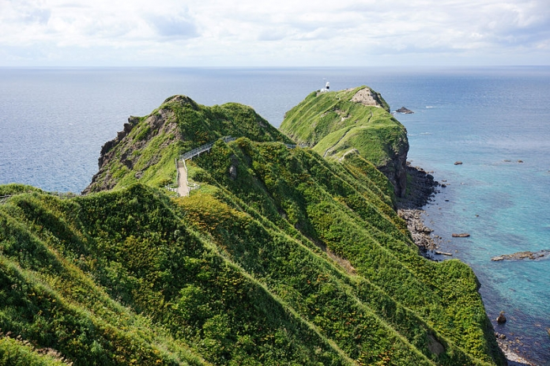
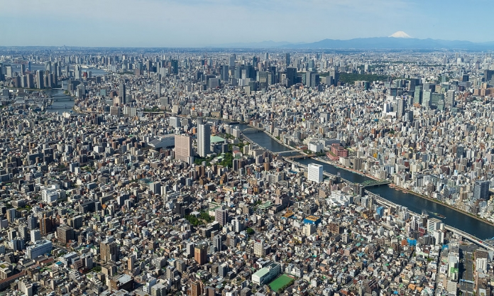
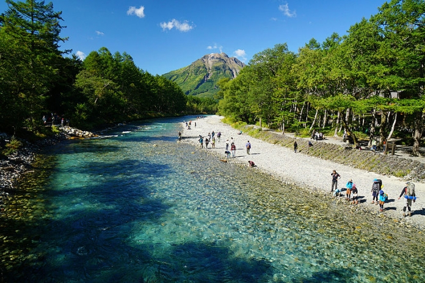
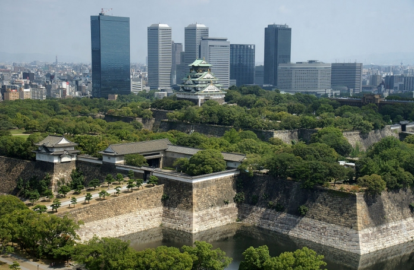
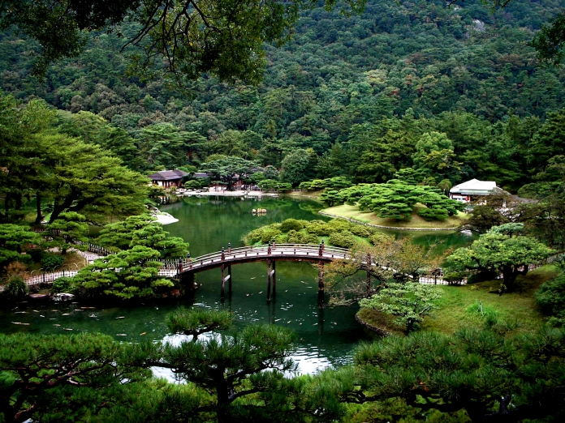
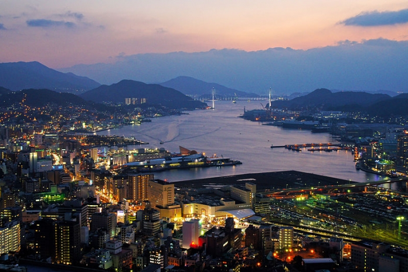
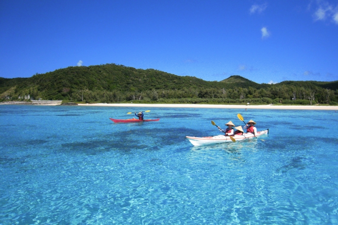

Conheça algumas regiões do Japão
Hokkaido
Hokkaido é uma grande ilha ao norte do Japão, com uma vasta área de fazendas, montanhas, cidades pequenas e cidades como Sapporo e Asahikawa que surpreendentemente possuem uma intensa vida noturna.
Tohoku

Tohoku fica no norte da principal ilha do Japão e inclui seis prefeituras: Akita, Aomori, Fukushima, Iwate, Miyagi e Yamagata. Tohoku possui a fama de região gelada, mas seus verões são quentes. Sua população é de mais de 9 milhões de pessoas, incluindo várias grandes cidades, como Sendai e Morioka.
Kanto
Kanto é uma região bem populosa, com cerca de 43 milhões de pessoas e centrada em torno de Tóquio. Kanto inclui Tóquio, Kanagawa, Chiba, Saitama, Ibaraki, Tochigi e Gunma. Boa parte da região é um gigantesco bloco único de área urbana conhecida como Grande Tóquio.
Chubu
Chubu é composta por muitas prefeituras, bem ao centro do Japão, entre Kyoto e Tóquio. As prefeituras de Chubu são Aichi, Gifu, Ishikawa, Nagano, Niigata, Shizuoka, Toyama e Yamanashi. A região de Chubu possui as áreas mais montanhosas do Japão, incluindo o Monte Fuji e Nagoya, a quarta maior cidade do país. A população da região de Chubu é de cerca de 22 milhões.
Kansai
A região de Kansai tem um dialeto da língua japonesa conhecido como Kansai-ben e seus habitantes encaram as frases das pessoas de Tóquio como engraçadas. É bastante conhecida a rivalidade entre Kansai e Kanto, pois ela já vem de séculos. Outra palavra utilizada para se referir à região de Kansai é Kinki, e este era o termo mais comum para esta região no passado. Nos últimos anos, tem sido minimizado porque a sua pronúncia faz os falantes de Inglês rirem.
Shikoku
Shikoku é a menor das quatro ilhas principais do Japão e é a 50ª maior ilha do mundo. Shikoku abriga as prefeituras de Ehime, Kagawa, Kochi e Tokushima que têm populações relativamente baixas. A população de toda a ilha é de cerca de 4 milhões de pessoas.
Kyushu
Kyushu é uma ilha bastante populosa, com cerca de 13 milhões de pessoas, e é a 37ª maior ilha do mundo. Kyushu é exuberante e verde, com vários dos vulcões mais ativos do Japão. A ilha está dividida em sete prefeituras: Fukuoka, Saga, Kumamoto, Nagasaki, Oita, Kagoshima e Miyazaki.
Okinawa
Okinawa é uma cadeia de pequenas ilhas ao sul, com um clima subtropical úmido e uma cultura única do Japão, com oito ilhas principais, onde cada uma tem uma cultura local e original.